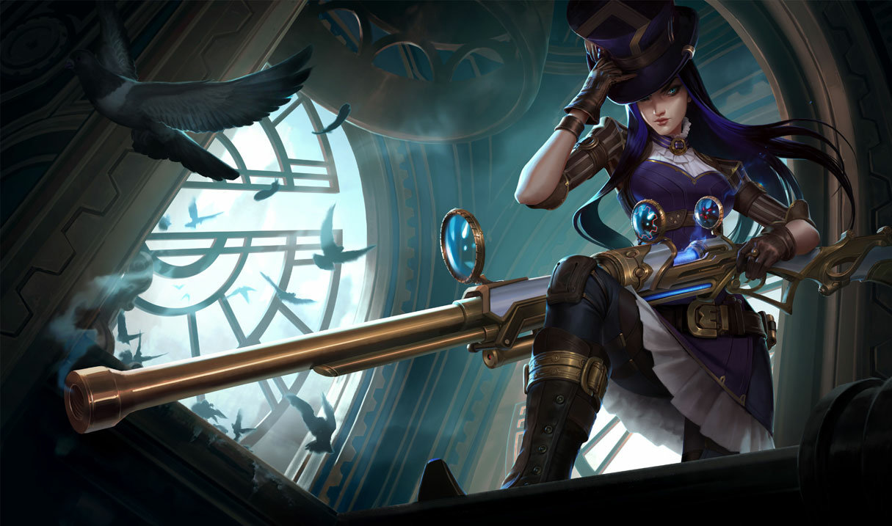
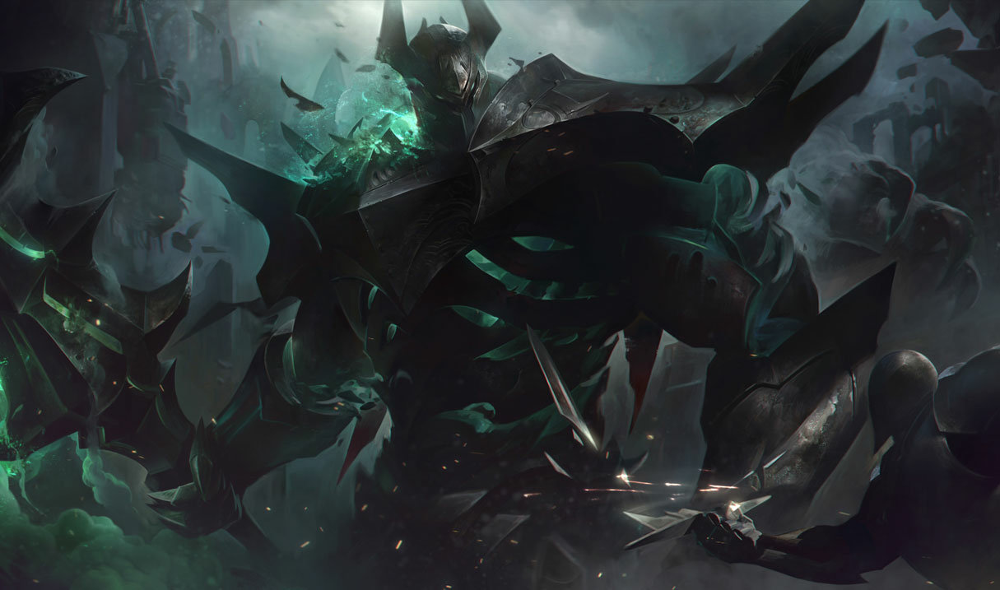

Campeões que eu jogo
Estes são os campeões que mais gosto de jogar em League of Legends.

Seraphine
A estrela musical. Adoro sua capacidade de suporte e a ultimate que pode mudar uma teamfight.
- Papel: Suporte/Mago
-
Habilidades:
- Q: Nota Alta
- W: Som Envolvente
- R: Bis

Caitlyn
A atiradora com alcance incrível. Suas armadilhas e precisão são perfeitas para controlar o mapa.
- Papel: Atiradora
-
Habilidades:
- Q: Pacificadora de Piltover
- E: Rede Calibre 90
- R: Ás na Manga

Mordekaiser
O rei da morte. Gosto de sua presença dominante e da habilidade de prender adversários no Reino da Morte.
- Papel: Lutador
-
Habilidades:
- Q: Obliteração
- W: Indestrutível
- R: Reino dos Mortos